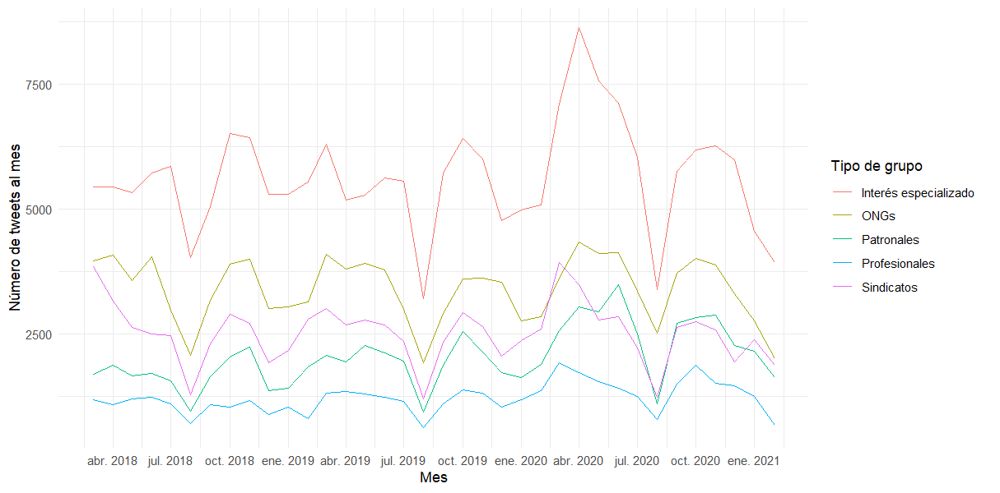
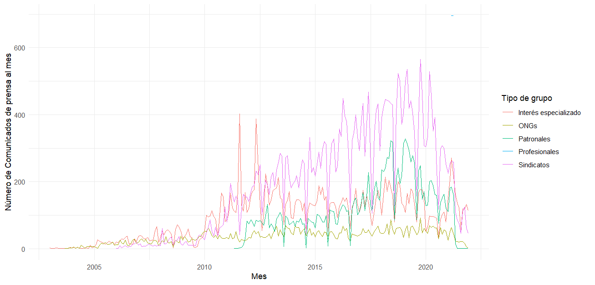

| nombre | tipo | asunto |
|---|---|---|
| Círculo de Empresarios | Business association | business |
| Confederación Española de Jóvenes Empresarios | Business association | business |
| Confederación Española de Organizaciones Empresariales | Business association | business |
| Confederación Empresarial Española Economía Social | Business association | business |
| Confederación Española Pequeña y Mediana Empresa | Business association | business |
| Unión Española de Entidades Aseguradoras y Reaseguradoras | Business association | business |
| Confederación Española de Comercio | Business association | business |
| Cámara de Comercio de España | Business association | business |
| Unión Española Fotovoltaica | Business association | energy |
| Fundación IDIS | Business association | health |
| Alianza de la Sanidad Privada Española | Business association | health |
| Confederación Española de Hoteles y Alojamientos Turísticos | Business association | hostelry |
| Asociación de Empresas Constructoras y Concesionarias de Infraestructuras | Business association | industry |
| Save the Children | NGO | childhood |
| Fondo Internacional de Emergencia de las Naciones Unidas para la Infancia | NGO | childhood |
| Fundación ANAR (ayuda a niños y adolescentes en riesgo) | NGO | childhood |
| Plataforma de Infancia | NGO | childhood |
| Asociación de Municipios afectados por Centrales Nucleares | NGO | energy |
| Ecologistas en Acción | NGO | environment |
| Amigos de la Tierra | NGO | environment |
| Greenpeace España | NGO | environment |
| World Wildlife Fund | NGO | environment |
| Sociedad Española de Ornitología | NGO | environment |
| Fundación Ecología y Desarrollo | NGO | environment |
| Fundación de Ayuda contra la Drogadicción | NGO | health |
| Medicos del mundo | NGO | health |
| Organización Nacional de Trasplantes | NGO | health |
| Alto Comisionado de las Naciones Unidas para los Refugiados | NGO | human rights |
| Amnistía Internacional | NGO | human rights |
| Comisión Española de Ayuda al Refugiado | NGO | human rights |
| Human Rights Watch | NGO | human rights |
| Observatorio de Multinacionales en América Latina | NGO | human rights |
| Juezas y Jueces para la Democracia | NGO | justice |
| Cáritas | NGO | poverty |
| Cruz Roja Española | NGO | poverty |
| Intermon-Oxfam | NGO | poverty |
| European Anti Poverty Network | NGO | poverty |
| Asociación por la Tasación de las Transacciones financieras y por la Acción Ciudadana | NGO | social justice |
| Servicio al Tercer Mundo | NGO | social justice |
| Autoridad Independiente de Responsabilidad Fiscal | NGO | social justice |
| Asociación para la Prevención Reinserción y Atención a la Mujer Prostituta | NGO | women |
| Confederación Empresarial de Hostelería de España | Special interest organization | business |
| Fundación COTEC | Special interest organization | business |
| Unión de Asociaciones de Trabajadores Autónomos y Emprendedores | Special interest organization | business |
| Asociación de Bioempresas ASEBIO | Special interest organization | business |
| Asociación Española de Distribuidores Autoservicios y Supermercados | Special interest organization | business |
| FACUA-Consumidores en Acción | Special interest organization | consumer |
| Organización de Consumidores y Usuarios | Special interest organization | consumer |
| Unión de Consumidores de España | Special interest organization | consumer |
| Autoræs de Teatro | Special interest organization | culture |
| Federación estatal de empresas de teatro y danza | Special interest organization | culture |
| Asociación de autores y editores de libros, revistas, periódicos y partituras | Special interest organization | culture |
| Comité Español de Representantes de Personas con Discapacidad | Special interest organization | disability |
| Organización Nacional de Ciegos Españoles | Special interest organization | disability |
| Confederación Estatal de Asociaciones de Estudiantes | Special interest organization | education |
| Confederación Española de Asociaciones de Padres y Madres de Alumnos | Special interest organization | education |
| Confederación Católica Nacional de Padres de Familia y Padres de Alumnos | Special interest organization | education |
| Federación de Asociaciones de Personas Mayores de Cataluña | Special interest organization | elderly |
| Asociación de Empresas y Servicios para la Dependencia | Special interest organization | elderly |
| Asociación de Productores de Energías Renovables | Special interest organization | energy |
| Fundación Renovables | Special interest organization | energy |
| Asociación de Empresas con Gran Consumo de Energía Eléctrica | Special interest organization | energy |
| Grupo Español de Crecimiento Verde | Special interest organization | environment |
| Coordinadora de Organizaciones de Agricultores y Ganaderos | Special interest organization | farmers |
| Confederación de Cooperativas Agrarias de España | Special interest organization | farmers |
| Red Española de Desarrollo Rural | Special interest organization | farmers |
| Asociación Apadrina un olivo | Special interest organization | farmers |
| Unión de Uniones de Agricultores y Ganaderos | Special interest organization | farmers |
| Asociación Española de Banca | Special interest organization | finance |
| Confederación Española de Cajas de Ahorro | Special interest organization | finance |
| Asociación Española de Prevención de Accidentes de Tráfico | Special interest organization | health |
| Federación Empresarial de Farmacéuticos Españoles | Special interest organization | health |
| Federación Española de Jugadores de Azar Rehabilitados | Special interest organization | health |
| Federación Española de Empresas de Tecnología Sanitaria | Special interest organization | health |
| Marea Blanca Estatal | Special interest organization | health |
| Sociedad Española de Salud Pública y Administración Sanitaria | Special interest organization | health |
| Sociedad Española de Enfermedades Infecciosas y Microbiología Clínica | Special interest organization | health |
| Consejo General de Colegios Oficiales de Farmacéuticos | Special interest organization | health |
| Sociedad Española de Medicina Familiar y Comunitaria | Special interest organization | health |
| Círculo Empresarial de Atención a Personas | Special interest organization | health |
| Federación de Asociaciones en Defensa de la Sanidad Pública | Special interest organization | health |
| Euro-Toques Comunidad Europea de Cocineros | Special interest organization | hostelry |
| Federación de Cocineros y Reposteros de España | Special interest organization | hostelry |
| Federación Española de Viviendas y Apartamentos Turísticos | Special interest organization | hostelry |
| Federación Española de Industrias de la Alimentación y Bebidas | Special interest organization | hostelry |
| Asociación Empresarial Marcas de Restauración | Special interest organization | hostelry |
| Asociación Corporativa de Agencias de Viajes especializadas | Special interest organization | hostelry |
| Plataforma de Afectados por las Hipotecas | Special interest organization | housing |
| Sindicato de Inquilinos e Inquilinas | Special interest organization | housing |
| Asociación Española de Fabricantes de Automóviles y Camiones | Special interest organization | industry |
| Asociación Empresarial del Comercio Textil Complementos y Piel | Special interest organization | industry |
| Federación Empresarial del Metal | Special interest organization | industry |
| Federación Empresarial de la Industria Química Española | Special interest organization | industry |
| Marea Pensionista | Special interest organization | labour |
| COLECTIVO LGTB+ DE MADRID | Special interest organization | lgtbi |
| Federación de Lesbianas, Gays, Transexuales y Bisexuales | Special interest organization | lgtbi |
| Hazte Oir | Special interest organization | lgtbi |
| Fundación Secretariado Gitano | Special interest organization | race |
| Europa Laica | Special interest organization | religious |
| Asociación de Directoras y Gerentes de Servicios Sociales | Special interest organization | social |
| Asociación del Deporte Español | Special interest organization | sports |
| Federación Española de Municipios y Provincias | Special interest organization | territory |
| Consejo Federal Español del Movimiento Europeo | Special interest organization | territory |
| Red de Áreas Escasamente Pobladas de Europa | Special interest organization | territory |
| Asociación Víctimas del Terrorismo | Special interest organization | victims |
| Federación de Asociaciones de Mujeres Separadas y Divorciadas | Special interest organization | women |
| Federación Estatal de Organizaciones Feministas | Special interest organization | women |
| Federación de Mujeres Progresistas | Special interest organization | women |
| Asociación de Mujeres Juristas THEMIS | Special interest organization | women |
| Mujeres en Igualdad | Special interest organization | women |
| Consejo de la Juventud de España | Special interest organization | youth |
| Unión de Actores | Union | culture |
| Sindicato de artistas líricos | Union | culture |
| Asociación Nacional de Profesionales de la Enseñanza | Union | education |
| Sindicato de Estudiantes | Union | education |
| Confederación de Sindicatos de Trabajadores Enseñanza | Union | education |
| Confederación Estatal de Sindicatos Médicos | Union | health |
| Sindicato de Técnicos de Enfermería | Union | health |
| Sindicato de Asistentes Técnico-Sanitarios de España | Union | health |
| Comisiones Obreras | Union | labour |
| Confederación General del Trabajo | Union | labour |
| Confederación Sindical Independiente de Funcionarios | Union | labour |
| Sindicato Unificado de Policía | Union | labour |
| Unión general de Trabajadores | Union | labour |
| Unión Sindical Obrera | Union | labour |
| Asociación de Directores de Escena de España | Professional organization | culture |
| Asociación de técnicos del espectáculo | Professional organization | culture |
| Federación de músicos asociados | Professional organization | culture |
| Asociación de Músicos Profesionales de España | Professional organization | culture |
| Asociación Agraria de Jóvenes Agricultores | Professional organization | farmers |
| Uniónde Pequeños Agricultores y Ganaderos | Professional organization | farmers |
| Consejo General de Colegios Oficiales de Médicos | Professional organization | health |
| Consejo General de Colegios Oficiales de Enfermería | Professional organization | health |
| Las Kellys | Professional organization | hostelry |
| Colegio Oficial de Ingenieros Aeronáuticos de España | Professional organization | industry |
| Asociación Profesional Magistratura | Professional organization | justice |
| Consejo General Abogacía | Professional organization | justice |
| Asociaciones de Trabajadores Autónomos | Professional organization | labour |
| Unión de profesionales y trabajadores autónomos | Professional organization | labour |
| Consejo General del Trabajo Social | Professional organization | social |
GdI y OMS
Grupos de interés y organizaciones de movimientos sociales
La muestra seleccionada contiene 140 organizaciones de grupos de interés de ámbito nacional en 14 áreas temáticas. Estas organizaciones han sido identificadas como las más activas en las arenas parlamentaria y gubernamental en España de acuerdo con los registros públicos durante las dos últimas décadas.
Las organizaciones de la muestra fueron clasificadas en cinco tipos (Asociaciones empresariales, ONG, Organizaciones profesionales, Organizaciones de interés especial y sindicatos) siguiendo trabajos previos sobre grupos de interés y partidos.
Los registros de las intervenciones públicas para la muestra de los grupos de interés y organizaciones sociales se extrajeron de los perfiles oficiales de Twitter. Para estos 140 usuarios se han recogido 536,420 tweets entre el 1 de marzo de 2018 – y el primero de marzo de 2021.

Comunicados de Prensa
Para 40 de los grupos de interés y organizaciones sociales de la muestra se extrajeron aproximadamente 90,000 comunicados de prensa de sus sitios web para diferentes períodos (1998 a 2021). Esta submuestra fue seleccionada por la conveniencia de comparar organizaciones por áraes temáticas y por la disponibilidad de los comunicados de prensa en sus sitios web.
| name | id | source | date1 | date2 | obs | issue | code | subcode | capcode | type |
|---|---|---|---|---|---|---|---|---|---|---|
| ATTAC | attac | https://attac.es/ | 03/12/2008 | 04/05/2021 | 1598 | social justice | 1 | 107 | Macroeconomics | NGO |
| Hazte Oir | ho | https://www.citizengo.org/hazteoir | 01/02/2004 | 14/12/2021 | 661 | antiabortion | 2 | 208 | Civil Rights | Special interest organization |
| Federación Estatal de Lesbianas, Gays, Transexuales y Bisexuales | felgtb | http://www.felgtb.org/ | 02/05/2011 | 15/12/2021 | 637 | lgtbi | 2 | 202 | Civil Rights | Special interest organization |
| Europa Laica | europalaica | https://laicismo.org | 30/01/2003 | 13/04/2021 | 3683 | religious | 2 | 207 | Civil Rights | Special interest organization |
| Coordinadora Estatal de Organizaciones Feministas Estado Español | feof | http://www.feministas.org/ | 19/09/2008 | 20/05/2021 | 650 | women | 2 | 202 | Civil Rights | Special interest organization |
| Federación Española de Jugadores de Azar Rehabilitados | fejar | https://fejar.org | 17/04/2015 | 30/03/2021 | 118 | health | 3 | 325 | Health | Special interest organization |
| Asociación Agraria de Jóvenes Agricultores | asaja | http://www.asaja.com | 26/09/2011 | 30/04/2021 | 8632 | farmers | 4 | 402 | Agriculture | Professional organization |
| Coordinadora de Organizaciones de Agricultores y Ganaderos | coag | http://coag.chil.me | 15/12/2015 | 17/05/2021 | 641 | farmers | 4 | 402 | Agriculture | Special interest organization |
| Unión de Pequeños Agricultores y Ganaderos | upa | https://www.upa.es/ | 23/03/2021 | 23/04/2021 | 1390 | farmers | 4 | 402 | Agriculture | Professional organization |
| Asociación Nacional de Profesionales de la Enseñanza | anpe | https://anpe.es/ | 28/04/2015 | 27/04/2021 | 2103 | labour | 5 | 504 | Labor | Union |
| Asociaciones de Trabajadores Autónomos | ata | https://ata.es | 08/06/2017 | 04/05/2021 | 835 | labour | 5 | 504 | Labor | Professional organization |
| Comisiones Obreras | ccoo | http://www.ccoo.es | 26/01/2006 | 29/10/2021 | 8195 | labour | 5 | 504 | Labor | Union |
| Confederación General del Trabajo | cgt | https://cgt.org.es | 28/06/2007 | 16/12/2021 | 3279 | labour | 5 | 504 | Labor | Union |
| Confederación Sindical Independiente de Funcionarios | csif | https://www.csif.es | 19/05/2012 | 30/03/2020 | 508 | labour | 5 | 504 | Labor | Union |
| Marea Pensionista | mareapensionista | http://mareapensionista.org/ | 26/05/2015 | 16/12/2021 | 841 | labour | 5 | 504 | Labor | Special interest organization |
| Unión general de Trabajadores | ugt | https://www.ugt.es/ | 22/01/2016 | 26/04/2021 | 4980 | labour | 5 | 504 | Labor | Union |
| Unión Sindical Obrera | uso | https://www.uso.es/ | 18/01/2013 | 21/10/2021 | 1755 | labour | 5 | 504 | Labor | Union |
| Confederación Autónoma Nacional de Asociaciones de Estudiantes | canae | http://www.canae.org | NA | education | 6 | 600 | Education | Special interest organization | ||
| Confederación Española de Asociaciones de Padres y Madres de Alumnos | ceapa | https://www.ceapa.es | 12/10/2014 | 07/12/2021 | 137 | education | 6 | 600 | Education | Special interest organization |
| Sindicato de Estudiantes | se | https://www.sindicatodeestudiantes.net/ | 13/05/2014 | 25/04/2021 | 1392 | education | 6 | 600 | Education | Union |
| SEO/BIRDLIFE | birdlife | http://avt.org | 08/03/2016 | 31/10/2021 | 1039 | environment | 7 | 709 | Environment | Special interest organization |
| Ecologistas en Acción | eea | https://www.ecologistasenaccion.org/ | 01/09/2003 | 02/04/2021 | 2307 | environment | 7 | 700 | Environment | NGO |
| Amigos de la Tierra | foe | https://fmujeresprogresistas.org/ | 25/11/2008 | 24/03/2021 | 1024 | environment | 7 | 700 | Environment | Special interest organization |
| Greenpeace España | gp | https://grupocrecimientoverde.org/ | 10/03/2004 | 08/07/2021 | 4149 | environment | 7 | 700 | Environment | Business association |
| WWF España | wwf | https://www.wwf.es/ | 13/11/2005 | 28/10/2021 | 1069 | environment | 7 | 709 | Environment | NGO |
| Asociación de Municipios afectados por Centrales Nucleares | amac | http://www.amac.es | 20/07/2006 | 18/12/2020 | 412 | energy | 8 | 800 | Energy | NGO |
| UNICEF | unicef | https://www.unicef.es/ | 23/06/2007 | 09/12/2021 | 869 | childhood | 13 | 1308 | Social Welfare | NGO |
| Comité Español de Representantes de Personas con Discapacidad | cermi | https://www.cermi.es | 19/01/2005 | 17/12/2021 | 1223 | disability | 13 | 1304 | Social Welfare | Special interest organization |
| Fundación ONCE Organización Nacional de Ciegos Española | once | https://www.once.es/ | 25/04/2018 | 22/04/2021 | 160 | disability | 13 | 1304 | Social Welfare | Special interest organization |
| Cáritas | caritas | https://www.caritas.es | 04/01/2016 | 07/05/2021 | 577 | poverty | 13 | 1302 | Social Welfare | NGO |
| Plataforma de Afectados por las Hipotecas | pah | https://afectadosporlahipoteca.com/ | 16/12/2013 | 20/12/2021 | 332 | housing | 14 | 1401 | Housing | Special interest organization |
| Círculo de Empresarios | cde | https://circulodeempresarios.org | 05/08/2015 | 19/04/2021 | 363 | business | 15 | 1520 | Domestic Commerce | Business association |
| Confederación Española de Organizaciones Empresariales | ceoe | https://www.ceoe.es | 09/07/2014 | 11/05/2021 | 4896 | business | 15 | 1520 | Domestic Commerce | Business association |
| Confederación Empresarial Española Economía Social | cepes | https://www.cepes.es | 19/07/2011 | 20/04/2021 | 384 | business | 15 | 1520 | Domestic Commerce | Business association |
| Confederación Española Pequeña y Mediana Empresa | cepyme | https://www.cepyme.es | 26/04/2016 | 01/12/2021 | 195 | business | 15 | 1521 | Domestic Commerce | Business association |
| Organización de Consumidores y Usuarios | ocu | https://www.ocu.org/ | 22/11/2019 | 23/04/2021 | 495 | consumer | 15 | 1525 | Domestic Commerce | Special interest organization |
| Amnistía Internacional | amnesty | https://www.es.amnesty.org | 05/01/2004 | 29/04/2021 | 798 | human rights | 19 | 1925 | International Affairs | NGO |
| Comisión Española de Ayuda al Refugiado | cear | https://www.cear.es | 31/08/2012 | 30/04/2021 | 543 | human rights | 19 | 1925 | International Affairs | NGO |
| Human Rights Watch | hrw | https://www.citizengo.org/hazteoir | 19/10/1998 | 03/11/2021 | 76 | human rights | 19 | 1925 | International Affairs | Special interest organization |
| Servicio al Tercer Mundo | setem | http://www.setem.org | 26/03/2011 | 21/04/2021 | 175 | social justice | 19 | 1901 | International Affairs | NGO |
| Asociación Víctimas del Terrorismo | avt | http://avt.org | 02/10/2009 | 30/04/2021 | 1621 | victims | 20 | 2015 | Government Operations | Special interest organization |
